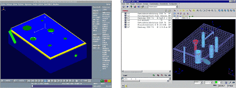
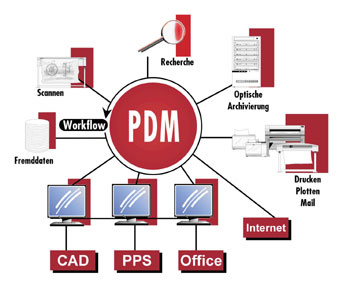
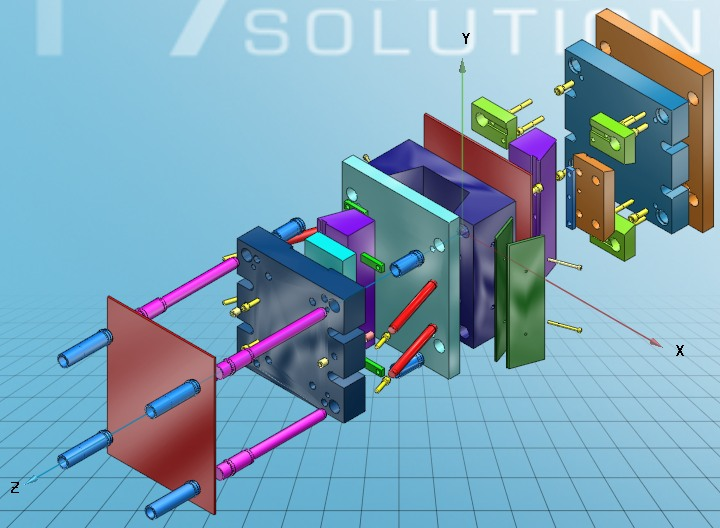
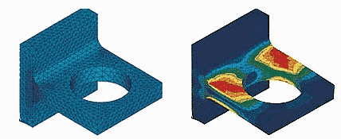

Kadir Özdemir
CAD/PDM sorumlusu
CPV Bilgi Teknolojileri Üretimi ve Danýþmanlýk Ltd. Þti.
Kasým 2007, Ýstanbul
PDM (Product Data Management - Ürün Bilgi Yönetimi) sistemleri ürünle ilgili bütün bilgileri ve ürünün içinde bulunduðu iþ akýþýný (work flow) kontrol eden sistemlerdir. Bu bilgi sistemleri tasarým geometrisi, teknik resimler, proje planlarý, parça dosyalarý, montaj diyagramlarý, ürün özellikleri, NC programlama, takým bilgileri, FEM analizleri ve malzeme listeleri gibi ürün hakkýnda birçok özelliði içine alýr.
PDM sistemleri bütün alanlara entegre olabilme özelliði sayesinde, ürün hakkýnda ihtiyaç duyulan bütün bilgilere kurum içerisinde kolayca ulaþýlmasýný saðlar. Yani doðru ve güvenilir bilgilerin zamanýnda doðru kiþiye ve doðru formda ulaþmasý saðlanmýþ olur. Böylece PDM sistemi farklý gruplar arasýnda ki bilgi akýþýný ve çalýþmayý kolay ve hýzlý hale getirerek ürün geliþtirme sürecinin yapýlandýrýlmasýnda önemli rol oynar.
Kullanýcýlarýnýn genellikle tasarýmcýlardan ve mühendislerden oluþmasýnýn yanýnda PDM sistemi üretim personeli, proje müdürleri ve yöneticilere ek olarak satýþ, pazarlama, satýn alma, lojistik ve finans alanlarýnda da kullanýlýr. PDM sistemini mühendisliðin ötesine taþýmakla birlikte müþteri ihtiyaçlarý ürün tasarým ve geliþtirme sürecinin daha ilk safhalarýna katký saðlar. Sonuç daha hýzlý iþ, daha az hata, daha az kayýp, daha düzgün iþ akýþý ve birlikte çalýþma etkileþiminin artmasýdýr. Buda üretim maliyetlerinin ve üretim zamanýn azalmasý ve daha verimli çalýþma demektir.
PDM sistemleri kullanýcý odaklý 5 temel fonksiyon tarafýndan desteklenmektedir:
1- Data ve Doküman Yönetimi: Ürün bilgilerinin korunmasýný ve sistemde depolanmasýný saðlar. Böylece güvenilir bilgiye ulaþýlabilir ve veri kayýplarý engellenmiþ olur.
2- Ýþ Akýþý ve Proses Yönetimi: Mevcut ürün bilgileri için prosedürleri kontrol eder ve bu bilgi ile iþ yapma sürecine dair bir mekanizma saðlar.
3- Ürün Yapý Yönetimi: Malzeme listeleri, ürün çeþitliliði ve tasarým çeþitliliðini ele alýr.
4- Parça Yönetimi: Standart parçalar hakkýnda ve tasarýmlarýn yeniden kullaným olanaklarý hakkýnda bilgi saðlar.
5- Program Yönetimi: Ürünün baðlý olduðu proseslerin koordinasyonunu saðlar.
Bu özelliklerin arkasýnda PDM sistemlerinin daha birçok özelliði vardýr. Bilgi transferi için E-mail baðlantýsý ve bir lokasyondan diðerine veya bir uygulamadan diðerine data transferi yapabilmek mümkündür. Data transfer özelliði sayesinde istenilen formatta dosya deðiþimi yapýlabilir. PDM sistemleri CAD sistemleri, ERP sistemleri gibi birçok uygulama ile uyumlu olarak çalýþabilirler.

Þekil 1. Delme iþlem verisinin CAD programýndan NC sistemine transferi
(Kaynak: www.partsolutions.com)
EDM/PDM olmasaydý
Mühendislik ve buna baðlý çalýþan sayýsýnýn fazla olduðu tipik bir þirkette, mühendislik bilgisi ve mühendislik süreçlerinin üzerindeki kontrol eksikliði nedeniyle birçok problem ortaya çýkar. Ýnsanlar bazen ihtiyaç duyduklarý bilgileri bulmakta baþarýsýz olurlar. Ayný zamanda ulaþtýklarý bilgiler ürünün gerçek durumunu belirtmeyebilir. Örneðin yanlýþ bir çizim ürünün fiziksel özellikleri hakkýnda yanlýþ bilgi verebilir.
Ürün tasarýmcýlarý çok sayýda tasarýmýn arasýndan aradýklarýna ulaþmakta baþarýsýz olurlar. Ýstenilen bilgiye ulaþmak için onlarca sayfalýk listeler karýþtýrýlmak zorunda kalýnabilir. Araþtýrmalar tasarým mühendislerinin zamanlarýnýn %80'nini bu þekilde harcadýðýný göstermektedir. Tasarýmcýlar belki de mevcut önceki tasarýmlarýna benzer yeni tasarýmlar meydana getirirler ve ayný iþi tekrar yaparlar buda iþlemlerin tekrarlanmasý ile birlikte ek yeni maliyetlere tekabül eder.
Bilgisayarlarda ve diðer elektronik sistemlerde ne kadar çok bilgi depolanýrsa bilgilere eriþmek, istenilmeyen giriþleri engellemek, veri kayýplarýný engellemek ve ürün çeþitliliðini güncellemek o oranda zorlaþýr.
Büyük þirketler yüzlerce TB'lýk (terabytes) bilgi depolarýna sahiptir (1TB = 1000 GB) ve binlerce hatta milyonlarca çizim depolarlar. Bir þirket yeni bir ürünü tarif etmek için 250.000 sayfaya ihtiyacý olduðunu ve bunlarýn her birinin 30 defa tekrarlandýðýný hesaplamýþtýr. Bu tonlarca kaðýt ve GB'larca data anlamýna gelmektedir.
Data giriþi yeterli þekilde kontrol edilmediðinde data kayýplarý meydana gelir ve eski datalar tekrar elde edilemez. Bu datalar tekrar oluþturulur ve bundan dolayý bir takým hatalar meydana gelebilir. Ürün çeþitlilik datasý güncelleþtirilmez. Tasarým geçmiþi kontrol edilemez ve bu yüzden önceki deneyimlerden yararlanýlamaz.
Uygulama programlarý arasýndaki uyumsuzluktan dolayý data transferi yapýlamaz ve transfer yapýldýðýnda hatalar meydana gelir. Bu iþlemlerin tekrar yapýlmasý dolayýsýyla zaman ve para kaybý demektir. Parça bilgileri ve malzeme listesi bilgilerinin CAD sistemine entegre olamayan bir ERP sistemine manual olarak transfer edilmesi gerekir. Üretim malzeme listesi mühendislik malzeme listesinden farklý olabilir. Ýki sistemde farklý departman veya organizasyonlarýn sorumluluðu altýndadýr. Herhangi bir zamanda iki sistemden birinde bir deðiþiklik yapýlabilir fakat diðerinde yapýlmaz. Sonuç olarak bütün kullanýcýlar yeni güncellenmiþ bilgilere ulaþamayabilir.
Ayný parça hakkýnda kopya birçok bilgi etrafta dolaþabilir ve kimsenin hangisinin doðru bilgi olduðu hakkýnda fikri yoktur. Bir deðiþiklik gerektiðinde bütün kopyalar deðiþemeyeceði için parçalarýn istenmeyen versiyonlarý iþlenir ve hatalý ürünler ortaya çýkar. Bu bütün kullanýcýlarý kapsayan bir süreç olduðu için kullanýcýlar arasýnda bunun nedenleri hakkýnda bilgi transferi yapýlýr. Buda gereksiz efor ve zaman kaybý oluþturur.
PDM Sürecinin 4 Basamaðý
Basamak 1 - Geleneksel Süreç
. müþterilerle veya tedarik zinciri partnerleriyle olan data deðiþimi çok azdýr veya hiç yoktur. (%15 veya daha az),
. mühendislik çizimlerine ve genel medya ortamýna manual olarak veri girilir,
. PDM sisteminde açýk ve anlaþýlýr bir yaklaþým saðlanamaz,
. ürün tanýmlayýcý bilgilerin firma kalitesi açýsýndan önemi anlaþýlmaz,
. ürün geliþtirme için gerekli olan belirlenmiþ bir bilgi yoktur,
. ürün geliþtirme için iþ akýþýnýn ne anlama geldiði bilinmez,
. deðiþim yönetimi manualdir,
. her departmanýn bilgi veri tabaný ayrýdýr,
. konfigürasyon yönetimi oluþmamýþtýr,
. diðer bilgisayar sistemleri ile PDM entegre olmamýþtýr,
Basamak 2 - Uyanýþ Süreci
. müþterilerle veya tedarik zinciri partnerleriyle olan azda olsa bir data deðiþimi olabilir. (%15-40),
. mühendislik çizimlerine ve genel medya ortamýna manual olarak veri girilir,
. ürün geliþtirme süreci belirsizdir,
. deðiþim yönetimi manualdir,
. departmanlar için ayrý veri depolama ve ayrý veri tabanlarý vardýr,
. bazý lokal PDM uygulamalarýnda belirli aktiviteler yapýlýr,
. veri depolama gibi temel PDM fonksiyonlarý kullanýlabilir,
. birkaç departman arasýnda sýnýrlý bir elektronik bilgi akýþý saðlanýr,
. PDM sisteminin birkaç kullanýcýsý vardýr,
. etkin olamayan bir konfigürasyon yönetimi vardýr,
. PDM ve CAD sistemi arasýnda temel bir entegrasyon vardýr, fakat bazý manual müdahaleler gereklidir,

Þekil 2. PDM sisteminin iþ akýþý içerisine entegrasyonu
(Kaynak: www.autocad-magazin.de)
Basamak 3 - Adaptasyon Süreci
. müþterilerle veya tedarik zinciri partnerleriyle olan sýk bir data deðiþimi vardýr. (40-75%),
. fonksiyonlar arasý bir elektronik depolama vardýr,
. ürün tanýmlama bilgisininin önemi anlaþýlmýþtýr,
. belli baþlý döküman listeleri oluþturulmuþtur, ürün geliþtirme için data ve diðer bilgiler gereklidir,
. þirket çapýnda ortak ve iyi belirlenmiþ bir PDM yaklaþýmýna sahip olunmuþtur,
. ürün geliþtirme sürecinin parçalarý tanýmlanmýþtýr,
. deðiþim yönetimi gibi aktiviteler için otomatik iþ akýþý oluþmuþtur,
. kullanýmda bir çok PDM uygulamasý vardýr ve bunlarýn bazýlarý entegre olmuþtur,
. mühendislik ve ürün geliþtirmede bir çok PDM kullanýcýsý vardýr,
. bir çok departman arasýnda mühendislik bilgisi akýþý saðlanmýþtýr,
. PDM ile CAD ve MRP/ERP gibi diðer sistemler arasýnda temel bir entegrasyon vardýr, fakat manual müdahaleler gerekebilir.
Basamak 4 - Ýlerleme Süreci
. kurumsal çapta PDM sistemi,
. tam olarak tanýmlanmýþ ürün geliþtirme süreci,
. ürün geliþtirme için gerekli bütün bilgiler saðlanmýþtýr,
. müþterilerle veya tedarik zinciri partnerleriyle olan sürekli data deðiþimi vardýr. (%75 'ten fazla),
. data ve doküman yönetimi, esnek yönetim, deðiþim kontrolü, iþ akýþý yönetimi, komponent yönetimi, konfigürasyon yönetimi, proje yönetimi ile tam entegre olmuþ PDM uygulamalarý,
. PDM sistemindeki fonksiyonlarýn çoðu kullanýlabilmektedir,
. mühendislik / Ürün geliþtirme içinde ve dýþýnda bir çok PDM kullanýcýsý vardýr,
. bütün departmanlar arasýnda data ve dökümanlarýn elektronik transferi yapýlabilir,
. PDM ve diðer bilgisayar sistemleri ile tam ve otomatik olarak entegrasyon saðlanmýþtýr.
Bilgisayar Destekli Tasarým, Analiz ve Ýmalat Teknolojileri ve PDM
90'lý yýllardan itibaren özellikle havacýlýk ve daha birçok endüstriyel alanlarda bilgisayar destekli tasarým/analiz ve üretim vazgeçilmez bir mühendislik aracý haline gelmiþtir. Bu araçlar Ýngilizce kýsaltmalarý ile;
CAD (Computer Aided Design - Bilgisayar Destekli Tasarým)
CAE (Computer Aided Engineering - Mühendislik Analizi Amaçlý Bilgisayar Programlarý)
CAM (Computer Aided Manufacturing - Bilgisayar Destekli Üretim) olarak adlandýrýlmaktadýrlar.
Bu araçlarýn günümüz modern endüstriyel uygulamalara saðladýðý faydalarý sýrasýyla aþaðýda incelenmiþtir.
CAD - Tasarým Amaçlý Bilgisayar Programlarý: Bunlar üç boyutlu ortamda parça ve montaj tasarýmý yapma olanaðý saðlarlar. Þekil 2. de bir CAD yazýlýmý kullanýlarak tasarlanmýþ kalýp seti örneði görülmektedir.

Þekil 3. Bir kalýp setinin üç boyutlu tasarýmý (Katý Modeli)
CAE - Statik ve dinamik mukavemet hesaplarýnýn yapýlmasýnda kullanýlan bilgisayar yazýlýmlarýdýr. Bu uygulamaya örnek olarak Þekil 3 de bir CAE yazýlýmý ile bir parçanýn yapýsal modellemesi ve yük altýnda yapýsal deformasyonu görülmektedir.

Þekil 4. Bir FEA Modeli
(Kaynak: www.TurkCADCAM.net/rapor/imalatta-cadcam)
CAM - Tasarlanan parçalarýn Nümerik Kontrollü Tezgahlarda yüksek hassasiyette iþlenmesine yardýmcý olan programlardýr.
CAD/CAE/CAM programlarý kullanmadan tasarým ve Ýmalat yapmak, artýk dünyadaki tüm firmalar bu araçlarý kullandýklarý için imkansýzdýr. Hazýrlanmýþ olan parça ve montaj katý modelleri fabrika içinde bulunan pek çok birim için birincil girdi olarak kullanýlýr. Bu birimlerden en önemlileri þunlardýr:
Çizim Ofisi: Bir parçanýn veya montajýn katý modelinden yola çýkarak bir imalat resmi oluþturulur.
Planlama: Parça ve montajlara ait üç boyutlu katý modeller ve çizim ofisinin ürettiði teknik resimlerle "mühendislik ürün aðacý"ný kullanýlan üretim planlamalarý ve "imalat ürün aðacýný oluþtururlar. Burada katý modelleme tekniði planlama yaparken hata oranýný önemli ölçüde düþürürken yapýlan iþe büyük bir hýz kazandýrýr.
Takým Tasarýmý ve Ýmalatý: Parça ve montajlara ait katý model dosyalarýný ve çizim ofisinin teknik resimlerini baz olarak alýp bunlar üzerine gerekli takým tasarýmýný ve buna baðlý olarak imalatý yapýlýr.
NC Programlama ve imalatý: Parçalarýn NC programlarý yine teknik resimler ve katý model dosyalarý baz alýnarak NC programlama bölümü tarafýndan yapýlýr. NC tezgahta parçayý kesebilmek için uygun hazýrlanmýþ takýmlar, ham malzeme ve yukarýda hazýrlanan programýn yüklenmesi gerekir.
Konfigürasyon: Ürüne ait teknik resim, parça listesi ve diðer mühendislik dokümantasyonlarýný ve gerekli deðiþikliklerini, tüm birimlerin hatasýz kullanabilmeleri için tek merkezden yönetir. Bu bilgilerin elektronik ortam ürünü olmasý, bunlarýn konfigürasyon kontrolünü de vazgeçilmez oranda kolaylaþtýrýp hýzlandýrmaktadýr.
Kalite: Gerek tasarým ve gerekse üretim aþamalarýnda yürütülen aktivitelerin, kalite teminatý fonksiyonu ile güvence altýna alýnmasý gereklidir. Tüm bilgi ve doküman akýþýnýn elektronik ortamda olmasý, bunlarýn kalite teminatý hizmetlerine de doðruluk ve hýz kazandýracaktýr.
Malzeme: Ürün ile ilgili malzeme gereksinim listesinin çýkarýlmasý ve malzemelerin zamanýnda sipariþlerinin verilmesi iþlevleri verilerin elektronik ortam üzerinden yönetiliyor olmasý ile güvenirlik ve hýz kazanacaktýr.
Sonuç:
CAD/CAE/CAM çýktýlarýnýn yukarýda iþlevleri anlatýlan tüm birimler tarafýndan etkin bir biçimde kullanýlabilmeleri için (tasarýmýn baþýndan seri üretimin sonuna kadar) tek merkezden yönetilmeleri bir zorunluluktur. Bu yönetimin amacýna uygun olarak icra edilmesini saðlayacak olan sistem PDM (Product Data Management - Ürün veri Yönetimi) olarak adlandýrýlmaktadýr.
Ülkemizde yeni oluþmaya baþlayan PDM anlayýþý ve dolayýsý ile bunun ayrýlmaz parçasý olan PLM (Ürün yaþam çevrimi) ve PDM (Ürün geliþtirme yönetimi) ile ilgili danýþmanlýk hizmeti veren birçok firma vardýr. Bilgisayar ve elektronik sistem uygulamalarýnýn sayýsý arttýkça bunlarýn arasýndaki uyum sorunu da artacak ve firmalar çözüm sistemlerine yönelmek zorunda kalacaklardýr. Bu sürece hýzlý adapte olabilmek için uyumsuz çalýþma sorunu olmayan ve mevcut sistemlerinize hýzlý ve kolay adapte olabilecek sistemleri tercih etmek kaçýnýlmazdýr. Buda çözüm alanýna odaklanmýþ ve alanýnda tecrübeli kadrolara sahip danýþmanlýk firmalarýný ön plana çýkartacaktýr.
|